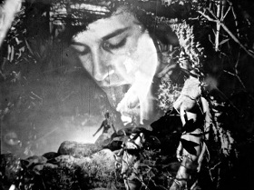

The Exquisite Corpus
Peter Tscherkassky
Austria 2015
19 min – 35mm – no dialogues
"Tscherkassky's is a rigorously analog film, manually composed one frame at a time out of moments from disembodied feature films, amateur and porn flics, as well as fragments of discarded advertising rushes – magic from the garbage can of commercial film. A subversive humor seeps into Tscherkassky's multifaceted use of visual styles and formal play, only heightening the gentle ecstasy of voyeuristic curiosity, desire and seduction fantasy the film invokes. THE EXQUISITE CORPUS is a trance film that cunningly magnetizes animal sensuousness, a wet daydream composed of faces, bodies, weavings – tactile and textile: it is an erotic simulation game." – Stefan Grissemann
wednesday 14 oct 8.15 pm werkstattkino
Peter Tscherkassky born in 1958 in Vienna, Austria. Lived in Berlin 1979-84. Studied philosophy. Doctoral thesis: "Film as Art. Towards a Critical Aesthetics of Cinematography" (1985/86). Founding member of Sixpack Film. Organized several international avant-garde film festivals in Vienna and film tours abroad. Since 1984 numerous publications and lectures on the history and theory of avant-garde film. 1993 and 1994 artistic director of the annual Austrian film festival "Diagonale".
Films (selection) Liebesfilm 1982 – Erotique 1982 – Motion Picture (La sortie des Ouvriers) 1984 – 20 Little Films 1995 – Happy-End 1996 – L’Arrrivée 1998 – Outer Space 1999 – Coming Attractions 2010 – The Exquisite Corpus 2015